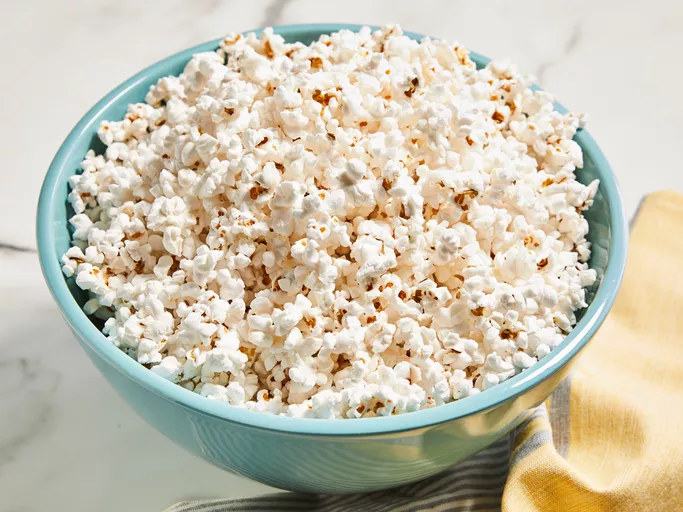

Popcorn

Description
Learn how to make Daddy's popcorn at home. You will never go back to microwave popcorn after trying this stovetop recipe. It is made with oil, margarine, and seasoned salt.
Ingredients
- ½ cup unpopped popcorn
- ¼ cup vegetable oil
- 3 tablespoons margarine
- ½ teaspoon seasoned salt, or to taste, divided
Steps
- Cut a paper grocery bag in half. (For a serving bowl and to absorb excess oil.)
- Combine popcorn, oil, and margarine in a 2-quart pot. Heat pot on high heat, and constantly shake back and forth until first corn kernel pops, then cover pot, and continue shaking. When lid lifts off the pot, remove from heat; hold it over the prepared bag until popping stopped.
- Pour popcorn into the bag. Season with 1/4 teaspoon seasoned salt; shake bag to distribute. Taste before seasoning with more salt.
Home